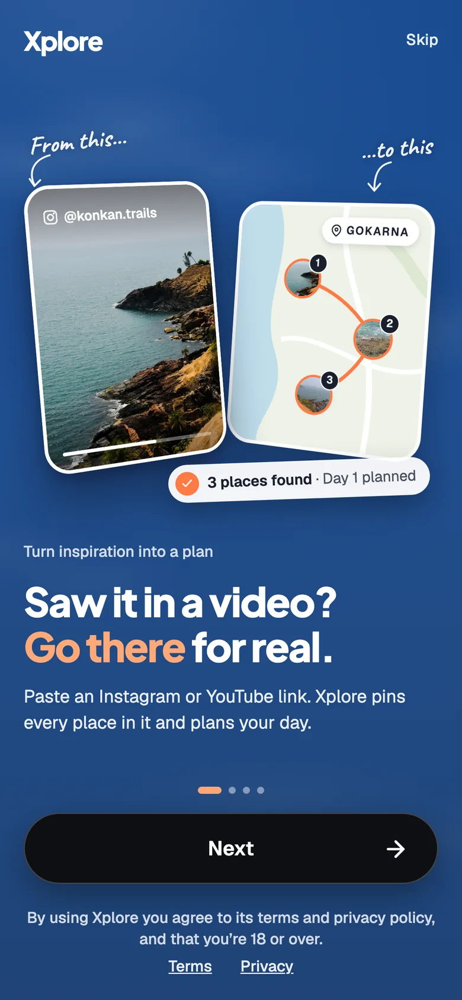
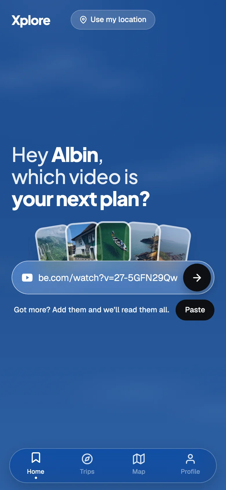
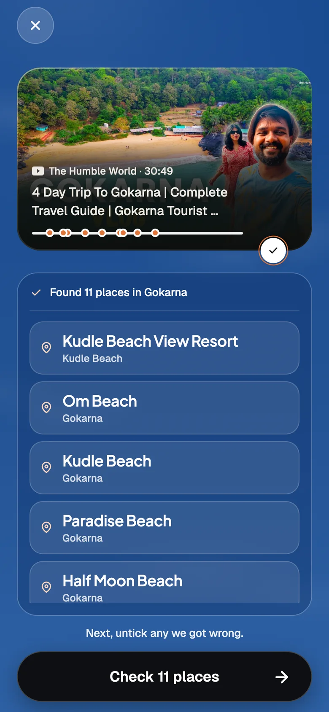
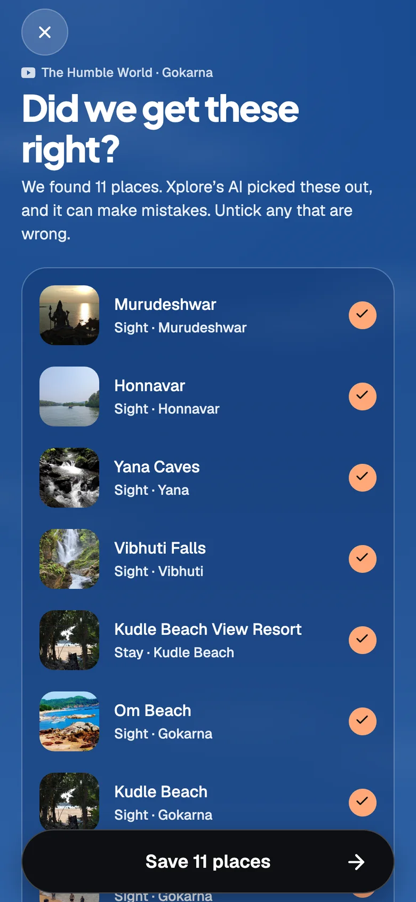
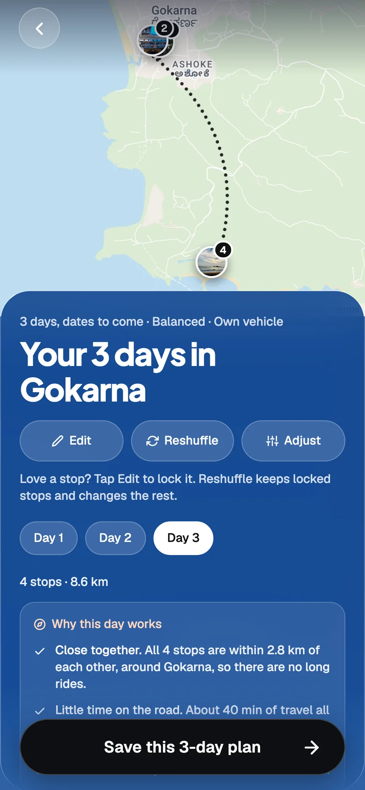
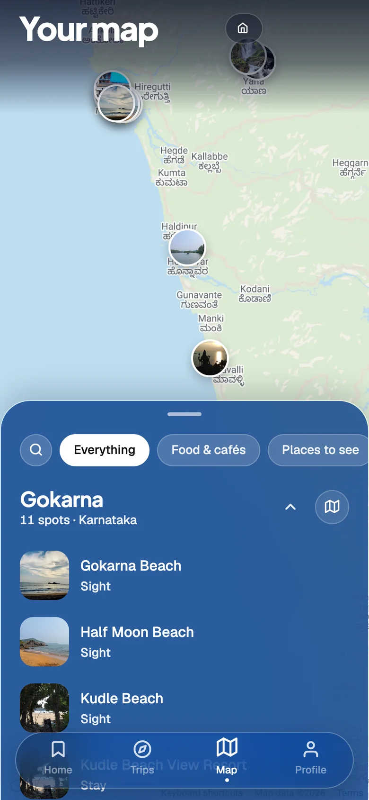
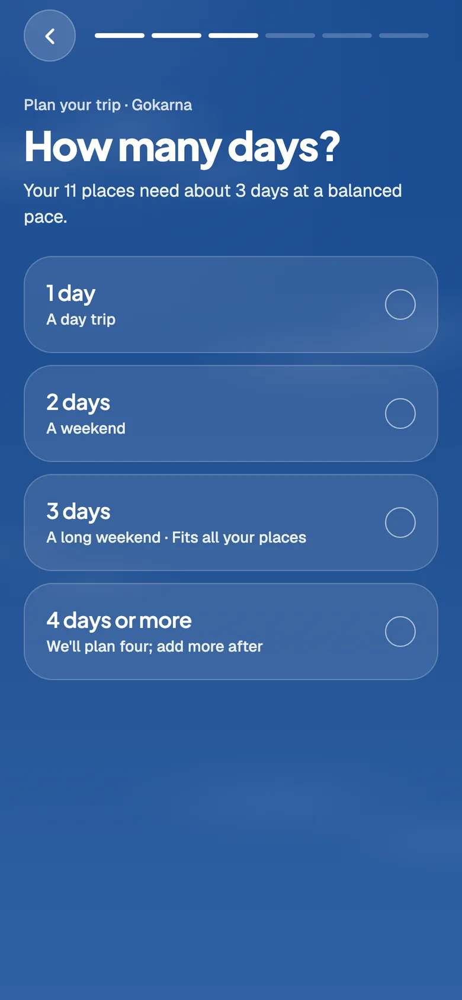
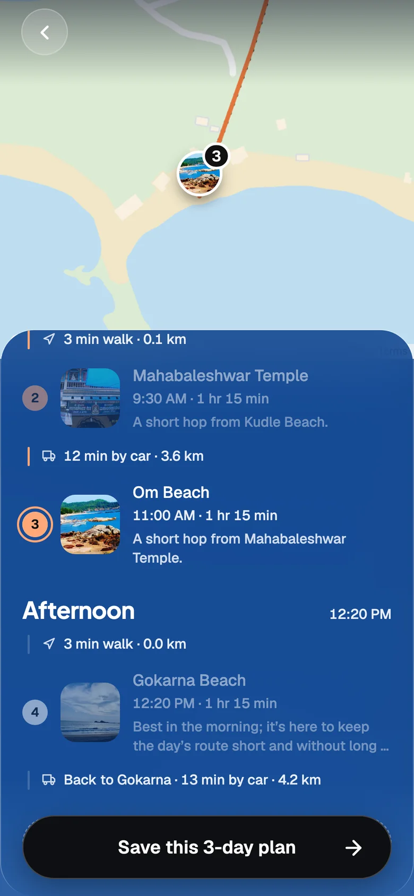
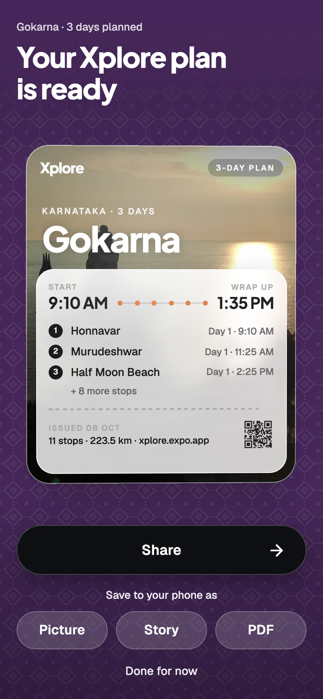

Case study 02 · Mobile app · Built and live
Saw it in a video? Go there for real. A travel app that turns saved reels, posts and YouTube videos into a planned trip.
In 30 seconds
- The problem: People save travel videos and never go. The places stay inside the video, with no map and no plan.
- What I did: Designed and built Xplore. Paste an Instagram reel, an Instagram post or a YouTube video, and it finds every place in it, puts them on a map and plans the days.
- Why it is different: This is not a mockup with fake data. It runs on real APIs: Gemini reads the video, Google Places finds each place, and Supabase runs group voting.
- See it live: the web build is at xplore.expo.app.
The problem
A travel reel names four places in 40 seconds. A YouTube vlog names eleven in half an hour. An Instagram post hides them in the caption. You save it. Then you have to go back, pause, type each name into a map, and work out the order yourself. Most people stop there, so the saved folder grows and the trip never happens.
Xplore does that work for you. One link goes in. A plan you can follow comes out.

The promise, on the first screen.
How it works
Four steps, from a link to a plan.

1. Paste a link. Home has one job, so it has one field.

2. It reads the video. A 30 minute vlog becomes 11 places.

3. You check it. Untick anything the AI got wrong.

4. You get a plan. Days, times and the route on a real map.
Real APIs, not mock data
Most design projects stop at a prototype with made-up content. I wanted to know if the idea survives real data. So every part of Xplore that looks smart is doing real work on a real server.
Google Gemini
Reads the caption and description of a video and returns a clean list of places.
YouTube Data API
Gets the title, description and length of a YouTube video.
Apify
Reads Instagram reels and posts, which have no open API of their own.
Google Places API
Turns each place name into a real place with an address, a location and a photo. Also runs the search when you add a place by hand.
Google Maps
Draws the map for real cities on the web.
Wikipedia and Wikimedia
Free photos and city notes, tried first before a paid Google photo.
Supabase
The database, sign-in without an account, and live updates when friends vote.
PostHog
Analytics, to see how people use the app.

Your map. A real Google map. Every pin came out of one video.
What happens when you paste a link
- 1. The phone checks the link. If it was read on this phone in the last 30 days, the answer is instant.
- 2. The server gets the text. YouTube's API for a video, Apify for a reel or a post.
- 3. Gemini lists the places. It follows strict rules, and it must say "I don't know" instead of guessing.
- 4. Google Places finds each one. Five at a time, with coordinates and a photo.
- 5. You confirm. Only the places you keep ticked are saved.
Every result is saved for 30 days and shared. So if two people paste the same video, the second one costs nothing and loads at once.
Key decisions
1. AI reads the video. Rules plan the trip.
Finding place names in a messy caption is a language problem, and AI is good at that. Planning a day is mostly maths: minutes, kilometres and what fits. AI is not reliable at that. So the planner is plain rules that run on the phone. It is instant, free, works offline and gives the same answer every time.

Five short questions. Each answer shows what it means for your places.

The plan explains itself. Each stop says why it sits where it does.
The trade-off: travel times are estimates from distance and terrain, not live traffic. And the rules still leave long waits between parts of some days.
2. The AI can be wrong, so you get the last word
The check screen says it plainly: "Xplore's AI picked these out, and it can make mistakes." Every place is shown with its photo and its area, so you can judge it in a second. You untick anything that is wrong, and only the rest is saved.
3. No sign-up
Asking for an email before showing any value loses people. Xplore signs each install in quietly, with no account. Your saved places stay on your device. Only trips you choose to share go to the database.
The trade-off: there is no backup. Clear your browser and your saved places are gone.
4. Built to stay free
Real APIs cost money, so cost became a design problem. Results are shared between users. Free Wikimedia photos are tried before Google's. Daily limits sit under each provider's free allowance. And if the counter itself breaks, the app says no instead of spending.
Plan with friends
A trip is rarely one person's choice. You can share a plan, and each person keeps, swaps or drops every stop. Votes show up live for everyone. A shared plan travels as a ticket, so it feels like something worth opening.

The plan as a ticket. Share it, or save it as a picture, a story or a PDF.
When things go wrong
With real APIs, things fail. Each failure has its own answer, written for people.
- A reel or post can't be read: you add the places by search instead.
- A video names no places: the app offers the city's best-known spots.
- One place can't be found: that one is dropped, not the whole video.
- Gemini fails: it tries twice, then switches to a second model.
- No internet: planning still works, because it runs on the phone.
Honest limits
- Xplore is a working prototype, used by a small group of testers. It is not a large product.
- Only the web build is live. There are no App Store or Play Store builds yet.
- The four example cities inside the app play saved sample data. Every other link, like the Gokarna video on this page, goes through the real APIs.
- Daily limits keep it free, so it is not built for many users at once.
What comes next
- Fix the long waits the planner leaves between parts of a day.
- Accounts, so saved trips survive a new phone.
- A native map and phone builds for the app stores.